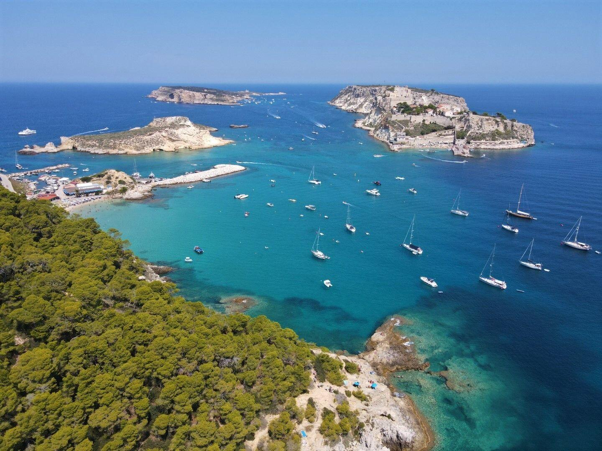
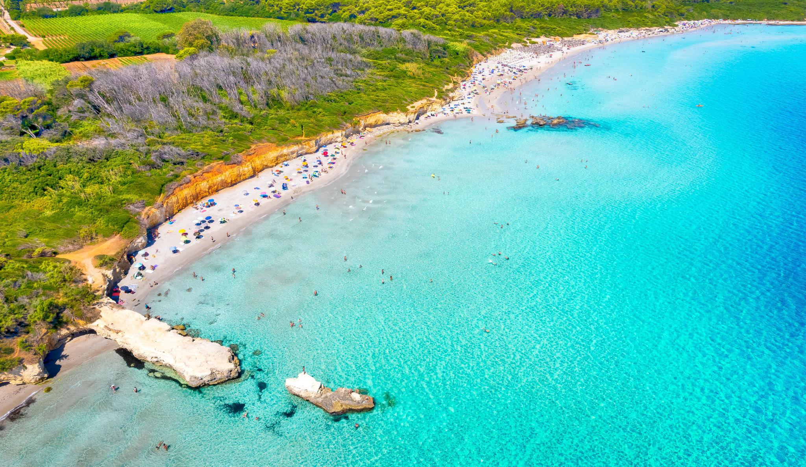
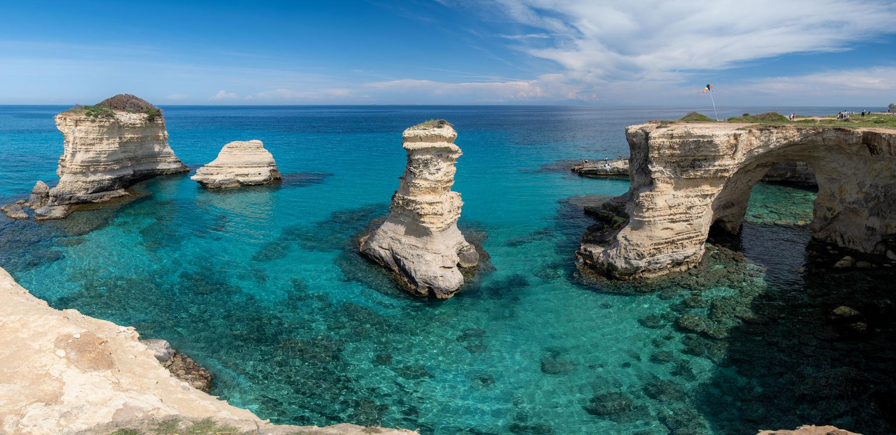
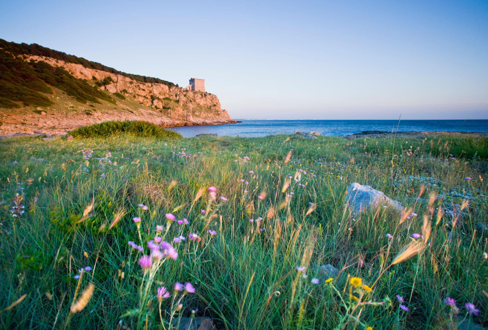
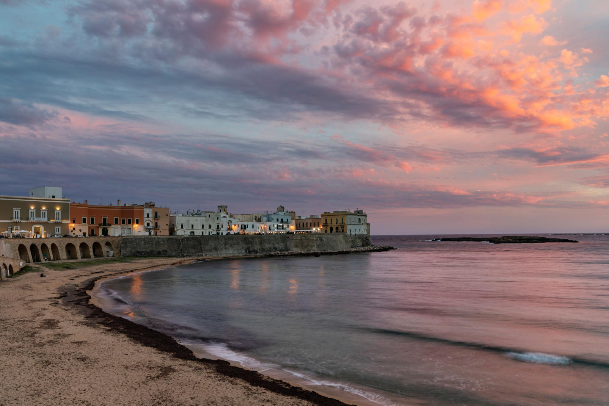

Pizzomunno — Vieste
Monolite bianco alto 25 m, fondali sabbiosi digradanti. Spiaggia simbolo del Gargano.
La Puglia vanta oltre 800 km di costa adriatica e ionica. Da nord a sud, il paesaggio cambia radicalmente: scogliere bianche sul Gargano, spiagge sabbiose nel Tavoliere, calette calcaree nel barese, lunghi litorali ionici nel Salento con acque degne dei Caraibi.
Monolite bianco alto 25 m, fondali sabbiosi digradanti. Spiaggia simbolo del Gargano.

Faraglioni bianchi, accessibile via mare o sentiero.

Caletta selvaggia, acque smeraldo, solo via sentiero o barca.

Sabbia bianca, pini d'Aleppo, acqua cristallina. Riserva marina protetta.

Sabbia bianca finissima, fondali bassi per 200 m, acqua caraibica.

La spiaggia simbolo del Salento adriatico: sabbia bianchissima e pini marittimi.

Archi naturali di roccia calcarea, acque verde smeraldo.

Solo a piedi, 20 min nella pineta. Parco Naturale. Mare selvaggio e incontaminato.

Nel cuore della città storica, sabbia dorata a pochi passi dalle mura medievali.
Periodo migliore: maggio-giugno e settembre per spiagge quasi vuote
Noleggio kayak e barca disponibile nei principali lidi
Alcune spiagge (Porto Selvaggio, Torre Guaceto) hanno accesso a numero contingentato
Aree marine protette: Porto Cesareo, Torre Guaceto — seguire le regole di accesso